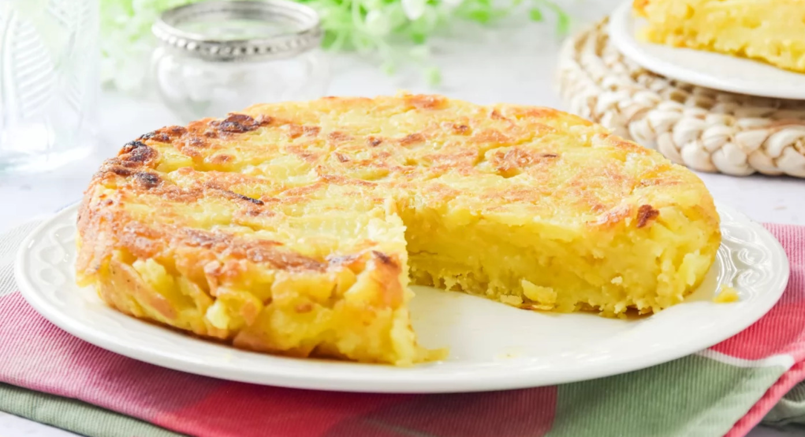

Home
Vegan Tortilla Papas
Ingredients
- 6 medium potatoes, tiny sliced
- 1 2 onions, thinly sliced
- 1 cup chickpea flour
- 1/2 cup maizena
- 1 cup vegetables soap
- 1/2 teaspoon turmeric
- 1/2 teaspoon garlic pownder
- 200gr silken tofu
- 1/2 cup soya milk
- Salt and pepper to taste
- Olive oil for frying
